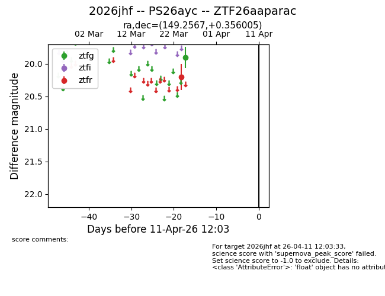
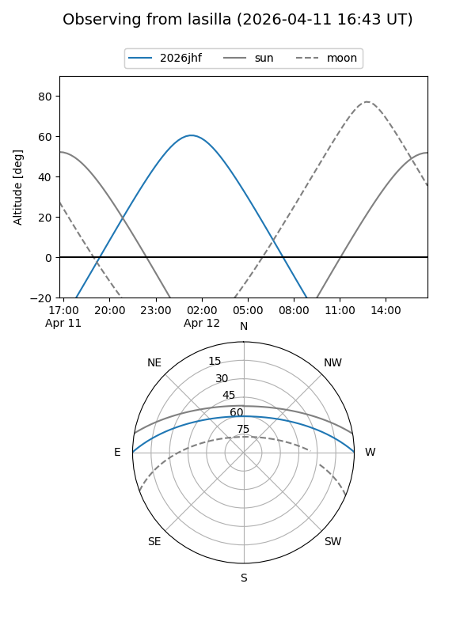
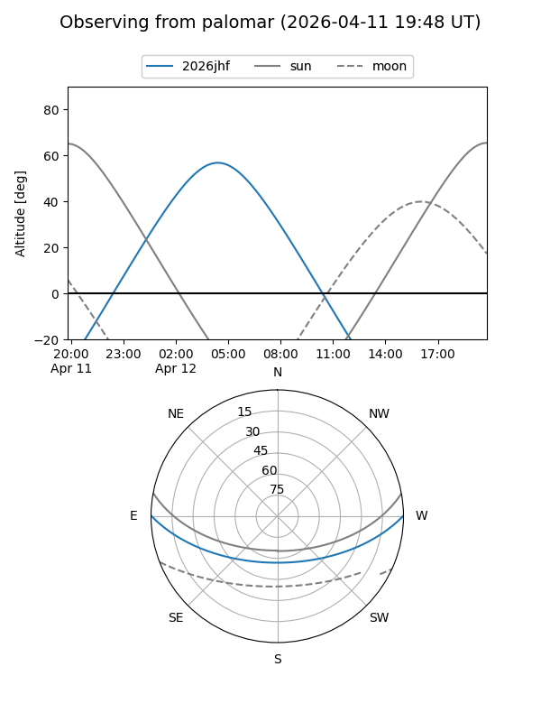

2026jhf
Target 2026jhf at 2026-04-11 12:14
Aliases and brokers:
FINK: link
Lasair: link
ALeRCE: link
TNS: link
YSE: link
alt names
ZTF26aaparac (ztf,fink_ztf)
2026jhf (tns,yse)
PS26ayc (panstarrs)
Coordinates:
equatorial (ra, dec) = 149.2567,+0.35600
equatorial (HMS+DMS) = 09:57:01.60,+00:21:21.62
galactic (l, b) = (238.1413,+40.33796)
Flags:
Photometry:
last ztfg=19.90, ztfr=20.20
1 ztfg, 1 ztfr detections
Lightcurve

Visibility


Additional plots